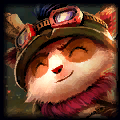
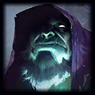

Inicio
ADC
Suporte
Mid
Jungle
Top
Tier List dos campeões do meta
Envie sua opinião
Escolha Seu Top
Esta categoria lhe fornecerá informações sobre top laners do jogo League of Legends. Aqui, você poderá encontrar informações sobre campeões frequentemente escolhidos para a posição de top laner no jogo, baseado em sua viabilidade e taxa de escolha. Campeões considerados troll picks para a top lane, como Taliyah e Alistar não serão citados. Campeões escolhidos como top laners apenas como escolhas de nicho, como Karma e Kassadin, também não serão citados.
Acesso rápido
Glossário
Campeões


Glossário
Termos comuns:
Alguns termos que poderão ser vistos no decorrer do guia.
CC:
Crowd Control, ou Controle de Grupo. São as maneiras com que um campeão pode bloquear ações dos inimigos.
Roaming:
Rotacionar. É a capacidade que um campeão tem de atravessar rapidamente o mapa do jogo ou de gankar outras rotas.
Gank:
Capacidade que um campeão tem de ajudar outras rotas.
Peel ou Protect:
Proteção. Capacidade que um campeão tem de proteger um aliado.
Zone Control ou Controle de Terreno:
É a capacidade que um campeão tem de bloquear uma passagem de um inimigo, seja por CC ou potencial de dano.
Poke:
É a capacidade que um campeão tem de causar dano periódico à um inimigo de uma distância segura.
Harass:
É a capacidade que um campeão tem de causar dano à um inimigo, seja por poke, burst ou DPS.
Burst:
Capacidade que um campeão tem de causar dano massivo em um pouco período de tempo à um campeão inimigo.
DPS:
Damage Per Second. É a capacidade que um campeão tem de causar dano contínuo a um inimigo.
Tank:
É um campeão resistente. A capacidade de um campeão resistir a dano chama-se Tankiness.
Squishy:
É um campeão frágil.
Off-Tank:
É um campeão moderadamente resistente. Ele resistirá mais que um campeão squishy, mas nem tanto quanto um campeão tank.
Mobility:
Mobilidade. É a capacidade que um campeão tem de deslocar-se rapidamente, seja com dashes, blinks e buffs de velocidade de movimento. Não confundir com roaming (um campeão com bastante mobilidade é capaz de realizar muitas rotações).
Skillshot:
Disparos de precisão. São habilidades ativas que são disparadas em linha reta. Um campeão pode desviar delas.
Point-and-click:
Habilidades que são atiradas diretamente no alvo. Um campeão não pode desviar delas.
AoE:
Area of Effect ou Área de Efeito. Quando uma habilidade afeta todos os campeões em uma área.
Single Target:
Alvo único. Quando uma habilidade afeta apenas um único alvo.
TF:
Teamfight ou Confronto de Equipe. Quando duas equipes se enfrentam com um significativo número de jogadores. Dependendo do contexto, também pode significar Twisted Fate, um campeão do jogo.
n
x
m
:
Sendo
n
e
m
números variáveis entre 1 e 5 (máximo 6 no modo Hexakill). Representa o número de jogadores
n
e
m
em um confronto.
CD:
Cooldown ou Tempo de Recarga. Quando usa-se uma habilidade, o jogador precisará esperar um determinado tempo para poder usá-la novamente. Este tempo é conhecido como Cooldown.
CDR:
Cooldown Reduction ou Redução do Tempo de Recarga. É o atributo passivo que permite reduzir o tempo de espera para poder reutilizar uma habilidade.
AP:
Ability Power ou Poder de Habilidade. É um tipo de atributo concedido por itens, runas, buffs e habilidades que aumenta o escalonamento de determinadas habilidades, geralmente habilidades que causam dano mágico, mas não em todos os casos. Não confundir com dano mágico.
AD:
Attack Damage ou Dano de Ataque. É um tipo de atributo concedido por itens, runas, buffs e habilidades que aumenta o escalonamento dos ataques básicos e de determinadas habilidades, geralmente habilidades que causam dano físico, mas não em todos os casos. Não confundir com dano físico.
Armor:
Armadura. É um tipo de atributo concedido por itens, runas, buffs e habilidades que aumenta a resistência à dano físico e o escalonamento de determinadas habilidades.
MR:
Magic Resistance ou Resistência Mágica. É um tipo de atributo concedido por itens, runas, buffs e habilidades que aumenta a resistência à dano mágico e o escalonamento determinadas habilidades.
True Damage:
Ou Dano Real. É o dano que não é reduzido por armadura ou resistência mágica. Este dano também não pode ser aumentado ou reduzido por modificadores de dano, como runas, itens, buffs e debuffs.
Buff:
Efeito positivo dado a um aliado ou a si mesmo.
Debuff:
Efeito negativo dado a um inimigo.
Melee:
Campeão com curto alcance.
Ranged:
Campeão com médio ou longo alcance.
Dive:
"Mergulhar" em uma torre. Refere-se à ação de atacar alguém em baixo de uma torre inimiga.
Kite:
Conduzir. Ação de atacar enquanto corre.
Campeões
Aatrox
Aatrox, a Espada Darkin, é um colosso frequentemente utilizado na rota topo devido ao seu médio alcance em suas habilidades básicas, alto potencial de dano, sustento e wave clean, e capacidade de sobreviver a explosões de dano.
Prós:
Extremamente resistente graças ao seu
E - Avanço Umbral
e sua ultimate,
R - Aniquilador de Mundos
;
Ótimo início de jogo, graças ao dano massivo das três instâncias de
Q - A Espada Darkin
;
Possui boa resistência à burst, graças à sua ultimate,
R - Aniquilador de Mundos
;
Possui um sustento considerável à passiva de seu,
E - Avanço Umbral
;
Alto dano base em suas habilidades, possibilitando itemizações de dano e resistência;
Traz bastante utilidade em lutas graças ao seu
W - Correntes Infernais
;
Sua passiva,
P - Postura do Arauto da Morte
, permite negar muita proteção e sustento dos inimigos;
Alto potencial de dive, graças à sua ultimate,
R - Aniquilador de Mundos
;
Possui muito controle de grupo com seu
Q - A Espada Darkin + W - Correntes Infernais
.
Contras:
Não possui total controle de sua passiva,
P - Postura do Arauto da Morte;
Perde sua força no decorrer do jogo;
Possui pouco alcance, sendo Aatrox suceptível a poke, harass e kite;
Seu combo
Q - A Espada Darkin + E - Avanço Umbral
pode ser mal-executado facilmente;
Apesar de possuir muitos avanços, os mesmos são curtos e possui pouca mobilidade no geral;
Quando seu
R - Aniquilador de Mundos
está em cooldown, Aatrox perde muito potencial de trocas.
Camille
Camille, a Sombra de Aço, é uma duelista resistente, capaz de facilmente isolar e desferir muito dano em um alvo. Além disso, possui uma boa mobilidade.
Prós:
Camille possui um dos melhores potenciais de isolamento do jogo com sua ultimate,
R - Ultimato Hextec
;
Pode pokear ou causar harass com seu
W - Varredura Tática
;
Sua Passiva
P - Defesa Adaptativa
permite que Camille fique bem resistente em cenários 1x1;
Possui boa mobilidade com seu
E - Disparo de Gancho
que ainda atordoa inimigo atingido, dando à ela alto potencial de pickoff e roaming;
O
Q - Protocolo de Pecisão
de Camille é ótimo contra alvos resistentes;
W - Varredura tática
dá à Camille um bom sustento;
Contras:
Camille perde sua força em confrontos de equipes;
Camille é difícil de masterizar;
Sua ultimate
R - Ultimato Hextec
pode ser cancelado se Camille sair ou for empurrada da área de efeito;
Tem dificuldade em crescer durante o game se ficar muito atrás;
Possui pouca wave clean;
Cho'Gath
Cho'Gath, o Terror do Vazio, é um tank massivo capaz de resistir a dano ao mesmo tempo que causa muito dano e controle de grupo, com alta capacidade de imobilizar e eliminar um inimigo frágil.
Prós:
Sua passiva,
P - Carnívoro
, oferece um bom sustento de vida e mana;
Seu
Q - Ruptura
e seu
W - Grito Selvagem
causam muito dano base e CC;
Seu
E - Espinhos Vorpais
ajuda a manter Cho'Gath perto de seu alvo e causa muito dano baseado em sua vida;
Sua vida pode escalar infinitamente ao abater campeões com
R - Banquete
;
R - Banquete
causa muito dano real, ideal para controlar objetivos e finalizar inimigos;
Possui muito dano em área, bom pra wave clean;
Torna-se muito resistente no fim do jogo;
Contras:
Cho'Gath não tem mobilidade;
Cho'Gath podde ter problemas com mana;
Fraco contra desengage;
É bastante previsível;
É um campeão melee, tornando-o suceptível a poke, harass e kite
Depende de itens.
Darius
Darius, a Mão de Noxus, é um colosso extremamente opressivo durante a fase de rotas. Tem muito potencial para punir constantemente campeões melee, além de ter um dos melhores inícios de jogo.
Prós:
Possui um dos melhores inícios de jogo, graças à sua passiva,
P - Hemorragia
;
P - Hemorragia
dá a Darius muito dano em todos os momentos do jogo;
Seu ultimate
R - Guilhotina de Noxus
é uma ótima execução e reseta seu cooldown quando elimina alguém com ele;
Alto sustento com
Q - Dizimar
;
Seu
W - Ataque Mutilador
e seu
E - Apreender
ajudam Darius a manter-se perto de seus inimigos;
Pode inutilizar seu oponente de rota;
Bom potencial de investidas divididas;
Contras:
Darius não tem mobilidade alguma;
Muito dependente de acertar seu
Q - Dizimar
e seu
E - Apreender
;
É um campeão melee, muito suceptível a poke, harass e kite;
Pouca velocidade base;
Diana
Diana, o Escárnio da Lua, é uma lutadora unidirecional com um dos maiores bursts do jogo. Além de possuir ferramentas de sobrevivência, é frequentemente considerada uma assassina por conta de seu altíssimo potencial de causar dano.
Prós:
Tem o burst mais rápido do jogo;
Seu
W - Cascata Lívida
é uma ótima ferramenta para mitigar dano de poke e harass;
Seu
Q - Golpe Crescente
e seu
P - Espada de Prata Lunar
são boas ferramentas de wave clean;
Baixo cooldown em sua ultimate,
R - Zênite Lunar
;
Pode causar um bom CC com seu
E - Colapso Minguante
;
Alto potencial de permanecer perto do inimigo, graças ao seu
E - Cascata Lívida
e dos resets de sua ultimate,
R - Zênite Lunar
;
Alto potencial de oneshot e pickoff caso acerte seu
Q - Golpe Crescente
;
Bom dano contínuo e dano contra torres, graças a sua
P - Espada de Prata Lunar
;
P - Espada de Prata Lunar
fornece um sustento de mana.
Contras:
Depende de acertar seu
Q - Golpe Crescente
;
Torna-se fraca quando em desvantagem;
É uma campeã melee, tornando-a suceptível a poke, harass e kite;
Tem um dos mais fracos inícios de jogo antes do level 6;
Depende de itens para causar dano;
Unidirecional: não possui escape e é muito previsível.
Dr. Mundo
Dr. Mundo, o Louco de Zaun, é um colosso massivo e extremamente resistente. É capaz de manter-se sempre por perto de seus inimigos e, além disso, causar muito dano enquanto regenera constantemente sua vida.
Prós:
Alta regeneração na fase de rotas, graças à sua passiva
P - Injetar Adrenalina
;
Torna-se extremamente difícil de matar no fim do jogo devido a sua ultimate,
R - Sadismo
;
W - Agonia Ardente
torna Dr. Mundo muito resistente à CC;
Sua itemização e seu
E - Masoquismo
dão a Dr. Mundo muita resistência mágica;
E - Masoquismo
dá a Dr. Mundo muito dano físico;
Causa muito dano mágico e lentidão com
Q - Cutelo Infectado
;
Contras:
Dr. Mundo não possui mobilidade;
É um campeão melee, tornando-o suceptível a poke, harass e kite;
Pouca resistência a dano físico;
Counterado por Feridas Dolorosas;
Precisa de tempo para ficar forte;
Ekko
Ekko, o Rapaz que Estilhaçou o Tempo, é um assassino com alto potencial de utilidade e dano. Seu estilo de jogo é voltado para montar jogadas estratégicas de tudo-ou-nada e, depois, voltar no tempo.
Prós:
Tem um forte wave clean em todos os momentos do jogo com seu
Q - Giratempo
e sua
P - Ressonância Revo-Z
;
Alto potencial de jogadas estratégicas, graças ao seu
W - Convergência Paralela
;
Possui baixos cooldowns em suas habilidades;
Possui bom potencial de poke com seu
Q - Giratempo
;
Muito potencial de burst com
P - Ressonância Revo-Z
;
Boa mobilidade com
E - Mergulho Fásico
e
R - Cronoquebra
;
Alta capacidade de sobrevivência e outplay devido ao
W - Convergência Paralela
;
Extrema capacidade de sair de situações de risco com seu ultimate,
R - Cronoquebra
;
Excelente em reiniciar lutas com seu
W - Convergência Paralela
e sua
R - Cronoquebra
.
Contras:
Burst muito atrasado devido ao tempo de espera para o retorno de seu
Q - Giratempo
;
Possui problemas com mana;
Precisa prever onde o inimigo estará, devido ao atraso de
W - Convergência Paralela
;
Fraco quando em desvantagem;
Fraco contra CC.
Fiora
Fiora, a Grande Duelista, é uma das melhores duelistas do jogo, como seu título sugere. Possui várias maneiras de manter-se perto de seus inimigos, causando muito dano a eles. Sendo assim, Fiora é uma das melhores splitpushers do jogo.
Prós:
Ótimo potencial de duelo, graças à sua passiva,
P - Dança da Duelista
;
Sua passiva,
P - Dança da Duelista
, dá à Fiora muito dano real baseado na vida e sustento, sendo ótima contra alvos resistentes;
Todas as suas habilidades, como
E - Esgrima
, facilitam o acerto dos pontos vitais da passiva;
Seu
W - Ripostar
permite que Fiora seja ótima para outplays;
Bastante dano e mobilidade com
Q - Estocada
;
R - Desafio Grandioso
faz com que Fiora seja uma das melhores duelistas, e que mais causam dano. Se Fiora acertar os quatro pontos vitais, Fiora regenera muita vida.
Contras:
Fiora é unidirecional, fraca contra iniciação pesada;
É uma campeã melee, tornando-a suceptível a poke, harass e kite;
Fraca quando em desvantagem;
Possui pouco controle de grupo;
Possui pouca resistência;
Fizz
Fizz, o Trapaceiro das Marés, é um assassino com muita mobilidade, burst e capacidade de outplay, além de ser o único assassino com capacidade de iniciação de TFs.
Prós:
Fizz possui muita mobilidade com seu
Q - Ataque do Ouriço
e
E - Brincalhão/Trapaceiro
;
É um assassino que pode iniciar TFs com seu ultimate,
R - Lançar Isca
;
Facilidade para farmar graças ao seu
W - Tridente da Pedra do Mar
;
E - Brincalhão/Trapaceiro
torna Fizz um campeão muito escorregadio, ótimo para outplays;
Facilidade em assassinar alvos frágeis;
Bom potencial de trocas a partir do nível 6;
Muito dano em área com
R - Lançar Isca
e
E - Brincalhão/Trapaceiro
;
Sua passiva,
P - Lutador Ligeiro
, permite que Fizz resista ao poke e harass dos níveis iniciais;
Fizz ignora colisão com unidades com sua passiva,
P - Lutador Ligeiro
, facilitando trocas contra campeões melee.
Contras:
Depende de acertar seu
R - Lançar Isca
;
Altos custos de mana;
É fraco antes do nível 3, quando não tem todas as suas habilidades básicas;
Fraco contra CC;
Counterado por Zhonya e Anjo Guardião;
É bastante squishy se for pego.
Galio
Galio, o Colosso, é melhor utilizado como um mago na rota meio, mas possui um grande potencial como um tank resistente. Possui grande potencial de dano, wave clean, iniciação, proteção e poke durante todo o jogo, além de possuir grande capacidade de roaming.
Prós:
Possui grande capacidade de causar dano durante a fase de rotas com seu
Q - Ventos de Guerra
e com sua passiva,
P - Esmagada Colossal
;
Alto potencial de wave clean com
Q - Ventos de Guerra
;
Seu
W - Escudo de Durand
é ótimo contra composições de dano mágico, já que passivamente ganha um escudo que bloqueia dano mágico e, ativamente, força os inimigos a usarem ataques básicos contra Galio, além de receber dano reduzido nesse período;
Possui um escape considerável com seu
E - Soco da Justiça
;
É ótimo para roaming, já que sua ultimate,
R - Entrada Heróica
, possui um alcance semi-global e desloca-o rapidamente até um aliado;
Uma boa
R - Entrada Heróica
pode mudar o rumo de um jogo;
Pode utilizar sua ultimate,
R - Entrada Heróica
, para proteger um aliado distante, para fugir usando um aliado como rota de fuga, ou para trazer dano, CC e resistência extra em uma luta já iniciada;
Pode usar o CC de seu
W - Escudo de Durand
, de seu
E - Soco da Justiça
e de sua ultimate,
R - Entrada Heróica
para proteger um aliado e reiniciar uma luta.
Contras:
Depende de seu
E - Soco da Justiça
para iniciar lutas;
Sua ultimate,
R - Entrada Heróica
pode ser cancelada por controle de grupo;
É um campeão melee, o que o torna suceptível a poke, harass e kite;
Possui altos custos de mana com suas habilidades básicas;
É relativamente fraco contra composições com alto potencial de causar dano físico;
Depende muito de um aliado para finalizar seus alvos caso opte por uma itemização defensiva.
Gangplank
Gangplank, o Terror dos Doze Mares, é um lutador que causa muito dano em área com seus barris de pólvora e possui grande pressão global, capaz de influenciar uma luta que qualquere lugar do mapa.
Prós:
Muito dano e wave clean com seu
E - Barril de Pólvora
;
Possui um bom poke com
Q - Negociarrr
;
Pode sair de CC com
W - Remover Escorbuto
;
Boas trocas com
P - Julgamento de Fogo
, que pode ser constantemetne reaplicado ao explodir barris;
Muita pressão global com
R - Barragem de Canhão
;
Escala bem no fim do jogo;
Contras:
Pouco efetivo no início do jogo;
Depende de juntar serpentes de prata com seu
Q - Negociarrr
para melhorar sua ultimate;
Seu
E - Barril de Pólvora
pode ser destruído por inimigos;
Tem problemas com mana;
É um campeão melee, tornando-o suceptível a poke, harass e kite;
Não tem mobilidade.
Garen
Garen, o Poder de Demacia, é um colosso bastante resistente, que causa bastante pressão na fase de rotas e tem muito potencial para eliminar facilmente um alvo com muita vantagem.
Prós:
Fácil de neutralizar inimigos com
R - Justiça Demaciana
;
Bom sustento durante sua fase de rotas com
P - Perseverança
;
Torna-se muito resistente a dano e CC com
W - Coragem
;
Q - Acerto Decisivo
remove lentidões e causa silenciamento point-and-click;
Seu
E - Julgamento
causa muito dano a quem permanecer perto de Garen, especialmente o inimigo marcado como vilão;
Torna-se bastante resistente no fim do jogo.
Contras:
É um campeão melee, tornando-o suceptível a poke, harass e kite;
Não tem mobilidade;
Fraco contra proteção e mobilidade;
Depende de estar perto do alvo constantemente;
Dano desabilita sua passiva,
P - Perseverança
;
Gnar
Gnar, o Yordle Pré-Histórico, é um lutador de médio alcance extremamente ágil, podendo causar muito dano em alvos tanks, mas que se transforma em um resistente e grande tank de iniciação ao atingir fúria máxima.
Prós:
Boa pressão de rotas contra alvos melees, graças ao seus ataques básicos e seu
Q - Bumerangue (mini)
;
W - Hiperativo (mini)
causa dano baseado na vida do inimigo, ideal contra alvos resistentes;
Boa mobilidade com
E - Salto (mini) e Encontrão (mega)
;
Ao atingir seu estado de Mega Gnar com
P - Fúria Genética
, Gnar torna-se muito resistente, sendo capaz de fazer iniciações pesadas de lutas;
Seu wave clean é bom e com seu
Q - Bumerangue (mini) ou Q - Pedregulho (mega) + W - Safanão (mega)
;
Boa iniciação com
E - Encontrão + R - GNAR! + W - Safanão
;
Contras:
Precisa administrar a fúria de sua passiva
P - Fúria Genética
;
Em sua forma Mega, Gnar é suceptível a poke, harass e kite;
Em sua forma Mini, Gnar é pouco resistente;
Só pode usar sua ultimate na forma Mega.
Gragas
Gragas, o Badernista, é um tank que causa bastante dano mágico. Possui muito potencial para resistir dano e iniciar confrontos de equipe, em especial, por conta do controle de grupo massivo que possui.
Prós:
Ótimo dano em área com
Q - Jogar o Barril + W - Fúria da Bebedeira
;
Bom sustento com
P - Happy Hour
;
Bom potencial de iniciação com
E - Barrigada + R - Barril Explosivo
;
R - Barril Explosivo
causa muito dano e pode ser usado, tanto para trazer um inimigo para o seu time, quanto para empurrar os inimigos;
W - Fúria da Bebedeira
deixa Gragas bastante resistente;
Contras:
Gragas precisa esperar o seu
Q - Jogar o Barril
carregar para causar um dano considerável;
Depende de itens;
É um campeão melee, suceptível a poke, harass e kite;
Pode ter problemas com mana.
Heimerdinger
Heimerdinger, o Inventor Idolatrado, é um mago de controle de terreno altamente focado em controlar toda uma área ao seu redor com suas torres mecânicas, causando muito dano a quem tentar atravessar sua zona de perigo.
Prós:
Alto potencial de DPS com suas
Q - Torre Evolutiva H-28G
;
Possui um forte poke com
W - Micro-Mísseis Hextec
;
Sua passiva,
P - Afinidade Hextec
, torna Heimerdinger rápido quando perto de suas torres;
E - Granada de Tempestade de Elétrons CH-2
é uma ótima ferramenta para imobilizar quem tentar se aproximar;
Sua ultimate,
R - MELHORIA!!!
, recompensa usos criativos, como DPS extra(RQ), burst extra(RW) ou CC massivo (RE);
Suas habilidades básicas permitem que Heimerdinger tenha um ótimo wave clean;
Acertar
E - Granada de Tempestade de Elétrons CH-2
em alguém perto de suas
Q - Torre Evolutiva H-28G
fará com que as torres causem muito mais dano;
É ótimo para zonear com suas torres;
É um campeão muito fácil e versátil.
Contras:
Depende de acertar seu
E - Granada de Tempestade de Elétrons CH-2
e seu
W - Micro-Mísseis Hextec
;
Depende de estar sempre próximo às suas torres;
Possui longos cooldowns;
Possui médio alcance, sendo Heimerdinger suceptível a poke à longa distância;
Todo o seu kit interage com inteligência artificial, então suas torres do
Q - Torre Evolutiva H-28G
são difíceis de controlar precisamente;
W - Micro-Mísseis Hextec
tornam-se mais fracos quanto mais dispersos forem.
Illaoi
Illaoi, a Sacerdotisa Cráquen, é uma lutadora do tipo colosso que pode causar muito dano em inimigos se permanecer em uma área por muito tempo, invocando tentáculos que criam uma enorme zona de perigo.
Prós:
Causa muito dano com os tentáculos de sua passiva
P - Profetisa de um Deus Ancião
;
P - Profetisa de um Deus Ancião
dá à Illaoi um ótimo sustento;
Q - Golpe de Tentáculo e W - Lição Dura
aplicam a cura de sua passiva;
W - Lição Dura
faz com que os tentáculos invocados pela passiva ataquem;
E - Teste de Espírito
torna Illaoi uma boa duelista;
Pode mudar o rumo de um jogo com seu
R - Salto de Fé
;
R - Salto de Fé
permite que Illaoi controle uma enorme área ao seu redor;
Contras:
Illaoi é uma campeã melee, suceptível a poke, harass e kite;
Não possui muita mobilidade além do pequeno dash de seu
W - Lição Dura
;
Fraca contra alta mobilidade;
Counterada por Feridas Dolorosas.
Irelia
Irelia, a Dançarina das Lâminas, é uma lutadora de alta mobilidade, capaz de resetar seus saltos e punir, tanto campeões melee quanto campeões com alto alcance.
Prós:
Irelia tem altíssima mobilidade e sustento com seu
Q - Surto da Lâmina
;
Seu
W - Dança Desafiadora
é uma boa ferramenta para proteger-se de CC e dano;
Sua passiva
P - Fervor Ioniano
dá à Irelia muito DPS em seus ataques básicos;
Sua passiva
P - Fervor Ioniano
causa dano extra em escudos;
Fácil de farmar com seu
Q - Surto da Lâmina
;
Seu
E - Dueto Impecável
pode atordoar vários inimigos e possibilitar resets pro seu
Q - Surto da Lâmina
;
Seu
R - Lâmina da Vanguarda
desabilita os ataques básicos de quem atravessar a barreira criada, além de possibilitar ainda mais resets para seu
Q - Surto da Lâmina
;
Sua mobilidade e
R - Lâmina da Vanguarda
fazem de Irelia uma ótima campeã em TFs;
Contras:
Pode ter problemas com mana;
Tem um início de jogo fraco;
Depende de acertar seu
E - Dueto Impecável
;
É melee e, logo, suceptível a poke, harass e kite;
Jarvan IV
Jarvan IV é um lutador de forte iniciação, normalmente usado para causar muito dano e impedir que seus inimigos escapem, criando uma parede de terreno intransponível para bloquear suas rotas de fuga.
Prós:
Causa muito dano com
Q - Ataque do Dragão
e
P - Cadência Marcial
;
É bastante resistente com seu
W - Égide de Ouro
;
A ultimate de Jarvan IV
R - Cataclisma
prende inimigos em uma arena circular;
Grande potêncial de burst com seu combo
E - Estandarte Demaciano + Q - Ataque do Dragão
;
Boa utilidade com seu
E - Estandarte Demaciano
;
JarvanIV tem um bom wave clean com seu
Q - Ataque do Dragão
;
Contras:
Tem problemas com mana;
Precisa equilibrar dano e resistência;
Gasta muita mana com seu wave clean;
É melee, o que o torna suceptível a poke, harass e kite;
Sua ultimate torna-se inútil contra alvos com muita mobilidade, como Lucian e Jax;
Jax
Jax, o Grande Mestre das Armas, é um duelista hipercarregador, focado em investidas divididas e neutralizar ataques básicos por um período. Possui grande potencial de causar dano com seus ataques básicos.
Prós:
Alta velocidade de ataque com sua passiva
P - Investida Implacável
;
Muito DPS no fim de jogo;
Ótimo splitpush devido ao seu alto potencial de duelar e causar dano em objetivos;
Grande potêncial de burst com seu combo
Q - Salto Atacante + W - Energizar
;
Pode negar ataques básicos com
E - Contra-Ataque
e atordoar vários inimigos;
R - Poder do Grão-Mestre
fornece muita resistência e DPS;
Boa mobilidade com
Q - Salto Atacante
;
Contras:
Precisa de um alvo para usar seu
Q - Salto Atacante
;
As habilidades de Jax consomem muita mana;
Início de jogo relativamente fraco;
Precisa de itens para causar dano;
É previsível;
Jayce
Jayce, o Defensor do Amanhã, é um híbrido entre mago de longo alcance com lutador de curto alcance. Suas duas formas (canhão e martelo) trazem diferentes vantagem ao campeão em diferentes situações, tornando Jayce um top laner AD bastante versátil.
Prós:
Jayce pode trocar entre a forma de canhão e a forma de martelo, trazendo vantagens em vários tipos de situações diferentes, através de sua ultimate
R - Canhão de Mercúrio/Martelo de Mercúrio
;
Possui muito dano em poke e harass com
Q - Disparo Chocante (canhão)
, especialmente quando fortalecido por
E - Portão Acelerador (canhão)
;
Jayce possui um ótimo potencial de causar muito dano em burst em sua forma Martelo;
Jayce tem um ótimo wave clean com as duas instâncias de seu
Q - Aos Céus! (martelo)/Disparo Chocante (canhão)
;
Seu
E - Portão Acelerador (canhão)
permite que Jayce ajude seus aliados, fornecendo-os velocidade;
W - Hipercarga (canhão)
torna muito fácil destruir torres;
Seu
E - Golpe Trovejante (martelo)
pode afastar inimigos que estão perto de Jayce;
P - Capacitor Hextec
permite que Jayce ganhe rápidos aumentos de velocidade, bom para percorrer o mapa;
R - Canhão de Mercúrio (martelo)
pode ser útil para diminuir as resistências inimigas, enquanto
R - Martelo de Mercúrio (canhão)
aumenta consideravelmente o burst de sua forma martelo;
W - Campo Estático (martelo)
, além de fornecer um DPS em área que ajuda em seu burst, fornece um bom sustento de mana.
Contras:
Depende de acertar seus pokes com
Q - Disparo Chocante (canhão)
, especialmente o fortalecido por
E - Portão Acelerador (canhão)
;
Altos custos de mana e cooldowns, muitas vezes o seu
W - Campo Estático (martelo)
não é o suficiente para compensar os altos custos;
É difícil de masterizar, devido as suas duas formas distintas;
E - Golpe Trovejante (martelo)
pode salvar inimigos com seu empurrão;
A sua forma de martelo é melee, então torna-se suceptível a poke, harass e kite se tentar recuperar mana nessa forma;
Depende de pressionar seu inimigo.
Kayle
Kayle, a Julgadora, é uma hipercarregadora voltada para ataques básicos que causam dano mágico em área e diminui muito as resistências inimigas. Kayle também pode ajudar seu time com muita utilidade.
Prós:
Sua passiva,
P - Fervor Sagrado
, diminui a resistência mágica dos inimigos, favorecendo a sua presença em composições com muito dano mágico;
Pode causar muito DPS massivo em área com seu
E - Fúria Íntegra
;
Também é uma boa fonte de utilidade para seu time;
Possui um bom sustento com seu
W - Bênção Divina
;
R - Intervenção
torna qualquer aliado, inclusive a própria Kayle, invulnerável a dano por um tempo;
Seu
Q - Acerto de Contas
e seu
W - Bênção Divina
tornam mais fácil o seu kiting;
Possui um dos melhores potenciais de dano no fim de jogo.
Contras:
Kayle é melee quando seu
E - Fúria Íntegra
não está ativo, tornando-a suceptível a kite, poke e harass;
Kayle não tem mobilidade;
O máximo de CC que Kayle possui é uma lentidão em seu
Q - Acerto de Contas
;
Empurra a lane mesmo sem querer com seu
E - Fúria Íntegra
;
Cooldowns altos no início do jogo;
Dependente de sua ultimate,
R - Intervenção
, para manter-se viva em TFs;
Pode ter problemas com mana.
Kennen
Kennen, o Coração da Tempestade, é um mago que necessita usar seus ataques básicos. Pode investir tanto em AP quanto em velocidade de ataque. Kennen tem um alto potencial de aplicar atordoamentos e causar muito dano em área.
Prós:
Kennen possui um bom alcance e bons status base;
W - Surto Elétrico
permite que Kennen seja bastante agressivo, tanto com suas habilidades quanto com seus ataques básicos;
Pode aplicar constantemente
P - Marca da Tormenta
;
Grande mobilidade com
E - Investida Relâmpago
;
R - Turbilhão Cortante
pode servir tanto para se proteger quanto para causar dano massivo;
Ótimo para aplicar pressão contra campeões melee;
Não usa mana
Contras:
Altos cooldowns;
Pouca capacidade de wave clean;
Precisa decidir em qual itemização deve investir;
Perde seu potencial contra alvos com muita mobilidade;
Kled
Kled, o Cavaleiro Intratável, é um lutador especializado em duelar contra alvos resistentes e influenciar rotas laterais. Sua montaria, Skaarl, possui uma barra de vida que leva dano em seu lugar. Ao continuar atacando, Kled pode recuperar Skaarl.
Prós:
Sua passiva,
P - Skaarl, a Lagarto Covarde
, permite que Kled possa virar lutas a seu favor quando recupera sua montaria;
Tem muito dano com seu
W - Tendências Violentas
;
Bom potencial de manter-se perto do inimigo com
Q - Armadilha na Corda
e
E - Justar
;
Grande potêncial de burst até em alvos com muita vida;
Ótimo potencial para roaming com
R - Avançaaaaaaar!
;
Possui um bom escape com seu
E - Justar
e com seu
Q - Pistola de Bolso (desmontado)
;
Contras:
Difícil de administrar seu
W - Tendências Violentas
;
Depende de acertar seu
Q - Armadilha na Corda
;
Fraco contra alta mobilidade;
É fácil desprender-se de seu
Q - Armadilha na Corda
Torna-se muito lento sem Skaarl;
Lissandra
Lissandra, a Bruxa Gélida, é uma maga de burst com alto potencial de CC. Pode iniciar lutas e eliminar rapidamente um alvo, ou imobilizar um time inteiro sob controle pesado.
Prós:
Bastante potencial de poke com seu
Q - Estilhaço de Gelo
durante a fase de rotas;
Seu
W - Círculo Ártico
deixa todos os inimigos ao redor de Lissandra enraizados;
Possui um bom potencial de iniciação com
E - Caminho Glacial + R - Túmulo Congelado
;
Sua ultimate,
R - Túmulo Congelado
, pode ser usada tanto ofensivamente para imobilizar um alvo, quanto defensivamente, para deixar Lissandra invulnerável e causar dano ao seu redor;
Alto dano em burst em seu combo;
Boa wave clean com seu
Q - Estilhaço de Gelo
;
Bom sustento de mana com sua passiva,
P - Glacinata
.
Contras:
Depende de executar seu combo completo para eliminar um alvo;
É uma maga de médio-curto alcance, sendo Lissandra suceptível a poke e harass;
Cooldowns altos em habilidades que não são seu
Q - Estilhaço de Gelo
;
Pico de poder atrasado pela itemização de suporte;
Visão countera sua iniciação;
Manter distância tira muito potencial de Lissandra;
Pode ter problemas com mana se não fizer bom uso de sua passiva,
P - Glacinata
.
Malphite
Malphite, o Fragmento de Monolito, é um tank muito resistente, especializado em mitigar dano físico, causar muito dano e CC e diminuir o poder de atacantes de dano físico.
Prós:
Sua passiva,
P - Escudo de Granito
, mitiga dano causado contra Malphite periodicamente;
Tem um bom dano com
Q - Fragmento Sísmico
;
A ultimate de Malphite
R - Força Incontrolável
tem alto potencial de virar um jogo;
Diminui muito o dano físico recebido com seu
W - Golpes Brutais
;
Diminui a velocidade de ataque dos inimigos com
E - Estrondar Terreno
;
É bastante fácil de se jogar;
Contras:
Altos custos de mana;
É um campeão melee, sendo suceptível a poke, harass e kite;
Vulnerável contra muito dano mágico;
Com exceção de sua ultimate, todas as suas habilidades são pouco impactantes;
Maokai
Maokai, o Ente Retorcido, é utilizado devido ao seu controle de grupo agressivo e capacidade de colocar visão. Causa bastante dano, mesmo fazendo sua itemização de tank. Tem ótimo controle de grupo, podendo iniciar lutas de uma grande distância.
Prós:
Possui bastante capacidade de colocar visão através de seu
E - Atirar Mudas
;
Quando em um arbusto,
E - Atirar Mudas
causa dano extra;
Possui baixos cooldowns em suas habilidades;
Possui bastante potencial de imobilização com seu combo
W - Avanço Retorcido + Q - Esmagamento Espinhoso
;
Possui bastante potencial de iniciação com suas habilidades
R - Garras da Natureza
e
W - Avanço Retorcido
;
Possui bom sustento próprio com sua passiva,
P - Seiva Mágica
;
Possui bastante controle de grupo;
Seu
E - Atirar Mudas
ótimo para zonear.
Contras:
Não possui muito dano contra alvos resistentes;
É difícil de jogar com Maokai quando em desvantagem;
É um campeão melee, tornando-o suceptível a poke, harass e kite;
Fraco contra proteção;
Tem problemas com mana;
Fraco contra duelistas.
Mordekaiser
Mordekaiser, o Revenã de Ferro, é um colosso que pune muito quem se aproxima de seu território. Possui um escudo que serve como segunda vida, que o protege conforme ele causa dano. Também causa muito dano.
Prós:
Seu
Q - Mace of Spades
causa muito dano no terceiro ataque;
Seu
W - Harvesters of Sorrow
serve como uma ótima fonte de sustento e dano DPS;
Pode punir campeões melee com seu
E - Syphoon of Destruction
;
Grande potêncial de DPS com
R - Children of Grave
;
Sua passiva
P - Iron Man
leva dano em vez de sua vida, sendo preenchida toda vez que Mordekaiser causa dano;
Mordekaiser pode roubar a alma dos inimigos com seu
R - Children of Grave
;
Contras:
Mordekaiser não possui escape ou habilidade para reposicionamento;
As habilidades de Mordekaiser consomem vida;
É um campeão melee, tornando-o suceptível a poke, kite e harass;
Fraco contra proteção;
Nasus
Nasus, o Curador das Areias, é um colosso que acumula muito dano durante a fase de rotas, tornando-se uma grande e resistente fonte de dano no fim do jogo.
Prós:
Sua passiva,
P - Devorador de Almas
, dá a Nasus um bom sustento durante a fase de rotas;
Seu
Q - Golpe de Sifão
acumula muito dano no decorrer do jogo;
Seu
W - Murchar
é uma ótima ferramenta para aproximar-se dos alvos e diminuir a velocidade de ataque e movimento dos mesmos
E - Fogo Espiritual
causa dano e muita redução de armadura;
Torna-se muito resistente no fim do jogo, sem perder seu dano;
R - Fúria das Areias
dá a Nasus uma ótima capacidade de sobreviver e causar dano;
Contras:
Nasus não possui escape ou habilidade para reposicionamento;
Pode ter problemas com mana;
Possui um início de jogo fraco
É um campeão melee, tornando-o suceptível a poke, kite e harass;
Fraco contra desengage;
Nautilus
Nautilus, o Titã das Profundezas, é um tank massivo com uma quantidade enorme de controle de grupo. Nautilus tem o poder de causar muito CC e de resistir muito tempo em lutas.
Prós:
É um dos tanks mais resistentes, graças ao escudo de seu
W - Ira do Titã
;
É um dos tanks com maior número de controles de grupo pesados no jogo;
Possui várias maneiras de manter um inimigo imobilizado;
Possui bastante potencial de pickoff com seu combo
Q - Lançar Âncora + P - Âncora Impactante
;
Possui bastante potencial de iniciação com suas habilidades
R - Carga de Profundidade
e
Q - Lançar Âncora
;
Alto potencial de continuar causando dano e controle conforme a luta continua com o dano extra de seu escudo,
W - Ira do Titã
, sua passiva,
P - Âncora Impactante
e seu
E - Correnteza
;
Possui um escape ao usar
Q - Lançar Âncora
em um terreno;
É ótimo para zonear.
Contras:
Depende de acertar seu
Q - Lançar Âncora
;
É um campeão melee, tornando-o suceptível a poke, harass e kite;
Fraco contra duelistas;
Possui altos custos de mana no início do jogo;
Não possui sustento.
Olaf
Olaf, o Berserker, é um lutador com alto potencial de trocas. Apesar da pouca mobilidade, Olaf se torna uma grande potência, capaz de ignorar controle de grupos e causar muito dano enquanto possui boa resistência.
Prós:
Sua passiva,
P - Fúria Berserker
, aumenta sua velocidade de ataque quando está com pouca vida;
Tem muito dano com seu
Q - Ressaca
e
E - Balanço Temerário
;
A ultimate de Olaf
R - Ragnarok
permite que Olaf fique imune a CC por alguns segundos;
Grande potêncial de 1x1;
Alto potencial de perseguir um alvo com seu
Q - Ressaca
;
Possui um bom sustento com seu
W - Golpes Nefastos
;
Contras:
Olaf não possui mobilidade, dependendo de itens para se aproximar de seu alvo;
As habilidades de Olaf consomem muita mana;
É um campeão melee, tornando-o suceptível a poke, harass e kite;
Possui altos custos de mana no início do jogo;
Ornn
Ornn, o Fogo Sob a Montanha, é um tank com muito potencial de causar dano e sobreviver a lutas, enquanto aprimora itens e controles de grupo dos aliados. Também é ótimo para punir campeões melee e iniciar lutas.
Prós:
Permite que seus aliados tenham um bom fim de jogo com sua passiva
P - Forja Viva
;
Tem muito dano e resistência com seu
W - Fôlego do Fole
;
A ultimate de Ornn
R - Chamado do Deus da Forja
é uma boa ferramenta para iniciar lutas e aprimorar os CCs dos seus aliados;
Não precisa voltar para a base para comprar itens;
Torna-se muito resistente no fim da partida;
Seu
Q - Ruptura Vulcânica
pode impedir passagens;
Possui considerável mobilidade e um bom CC com seu
E - Investida Calcinante
;
E - Investida Calcinante
pode destruir terrenos criados por outros campeões;
Contras:
É um campeão melee, tornando-o suceptível a poke, harass e kite;
Possui altos custos de mana no início do jogo;
Apenas causa dano a uma curta distância;
Precisa sobreviver ao início do jogo;
Pode ser difícil redirecionar
R - Chamado do Deus da Forja
;
Pantheon
Pantheon, o Artesão da Guerra, é um lutador que aplica muita pressão no início de jogo. Também é ótimo para movimentar-se pelo mapa. Pantheon tem um dos melhores inícios de jogo de todos os campeões.
Prós:
Ótimo para aplicar pressão no início do jogo;
Bom poke com seu
Q - Atirar Lança
;
Boa defesa contra ataques básicos e ataques de torre com sua passiva,
P - Proteção de Égide
;
Grande potêncial de burst;
Bom dano em área com
E - Ataque Busca-Coração
;
Bom potencial de roaming com
R - Grande Estocada Aérea
;
Atordoamento point-and-click com seu
W - Égide de Zeonia
, além de resetar sua passiva
Contras:
Escala mal para o fim de jogo;
As habilidades de Pantheon consomem muita mana;
Fraco contra conjuradores e campeões de longo alcance;
É um campeão melee, tornando-o suceptível a poke, harass e kite;
Counterado por CC;
Poppy
Poppy, a Guardiã do Martelo, é uma campeã tank, sendo focada em proteger e engajar. Poppy tem um bom potencial de duelo também, sendo boa em cenários 1x1 e 2x2. Ótima para counterar mobilidade.
Prós:
Sua passiva,
P - Embaixadora de Ferro
, pode servir como poke durante a fase de rotas. Ela também deixa um escudo, que Poppy pode escolher pegar durante um duelo ou usar como isca para atordoar alguém na parede com seu
E - Investida Heróica
;
Boa wave clean com seu
Q - Choque do Martelo
;
Pode impedir avanços rápidos com seu
W - Presença Inabalável
;
Pode afastar inimigos de seus aliados com seu
E - Investida Heróica
e com sua ultimate,
R - Veredito da Guardiã
;
Possui CC em praticamente todas as habilidades;
Pode mudar o rumo de uma TF com seu
R - Veredito da Guardiã
, tornando a luta anteriormente 5x5 um 5x4;
Seu
E - Investida Heróica
e seu
R - Veredito da Guardiã
(não carregado) servem para manter o inimigo no local do
Q - Choque do Martelo
;
Seu combo
E - Investida Heróica + R - Veredito da Guardiã
pode tanto impedir a aproximação de alguém quanto iniciar uma luta.
Contras:
Depende de acertar seu
E - Investida Heróica
em uma parede;
É uma campeã melee, tornando-a suceptível a poke, harass e kite;
Fraca contra proteção;
Pode salvar um inimigo com seu
E - Investida Heróica
ou com seu
R - Veredito da Guardiã
;
Controle de grupo cancela seu
R - Veredito da Guardiã
;
Pode ter problemas com mana.
Quinn
Quinn, as Asas de Demacia, é uma atiradora de médio alcance que pode ser usada na rota topo, especialmente contra campeões melee. Possui um alto dano em burst e um roaming excepcional.
Prós:
Quinn tem um alto potencial de burst se conseguir crescer no jogo;
Tem uma boa habilidade de reposicionamento, seu
E - Salto
dificulda ganks inimigos;
Vence a maioria das trocas graças a seu
Q - Investida Anuviante
que prejudica a visão do adversário e lhe causa dano;
Possui uma boa visão do mapa com seu
W - Sentidos Apurados
revelando uma grande área;
Sua passiva
P - Rapina
causa dano adicional em auto-ataques periodicamente;
Quinn não é facilmente gankada pois seu
R - Retaguarda do Inimigo
lhe consede muita velocidade de movimento e quando conjurado novamente ativa sua passiva;
Contras:
Quinn não tem um range muito grande, o que pode deixala vulnerável caso gaste todos os seus scapes;
Sua ultimate
R - Retaguarda do Inimigo
torna-se inútil durante uma TF;
O
E - Salto
e sua ultimate
R - Retaguarda do Inimigo
podem ser fácilmente parados por CC;
Quiin fica muito inútil se não conseguir vantagem no jogo;
Renekton
Renekton, o Carniceiro das Areias, é um dos lutadores mais notáveis da rota topo. Possui uma fase de rotas agressiva e sólida, podendo causar muito dano, resistir a dano e conseguir muita vantagem logo cedo
Prós:
Bom dano com
Q - Abater os Indefesos
;
Atordoamento point-and-click com seu
W - Predador Desumano
;
Possui alta mobilidade com
E - Fatiar e Picar
;
Sua passiva,
P - Domínio da Ira
, permite aprimorar as habilidades básicas;
Ótimo sustento com
Q - Abater os Indefesos
;
Não usas mana;
Torna-se muito resistente e ganha um alto potencial de causar dano quando
R - Dominus
está ativo;
Contras:
Depende de acertar seu
E - Fatiar e Picar
para conseguir usar a habilidade novamente;
Precisa administrar sua passiva
P - Domínio da Ira
;
É um campeão melee, tornando-o suceptível a poke, harass e kite;
Fraco contra desengage;
Rengar
Rengar, o Acossador da Alcatéia, é um assassino da rota topo. Utiliza muito bem arbustos para causar dano de uma distância segura. Quando toma vantagem, pode ganhar facilmente dano para eliminar qualquer alvo.
Prós:
Sua passiva,
P - Predador Oculto
, aumenta seu dano e aprimora suas habilidades;
Q - Selvageria
causa muito dano e é um ótimo reset de ataques básicos;
A ultimate de Rengar
R - Furor da Caçada
é uma boa ferramenta de roaming e pickoff;
Grande potêncial de burst com seu combo;
W - Rugido de Batalha
dá a Rengar uma boa sobrevivência;
E - Boleadeiras
aumentam seu potencial de pickoff e perseguição;
Extremamente forte perto de arbustos;
Contras:
Depende de estar perto de arbustos para conseguir mobilidade com sua passiva
P - Predador Oculto
;
Só pode usar uma habilidade aprimorada por vez;
Necessita muito de itens de CRD, já que suas habilidades demoram para recarregar;
É um campeão melee, tornando-o suceptível a poke, harass e kite;
Fraco quando em desvantagem;
Riven
Riven, a Exilada, é uma duelista que possui muita vantagem caso o jogador seja experiente com a campeã. É a campeã com mais combos e cancelamentos de animação do jogo. Jogadores dedicados podem facilmente eliminar alvos e rapidamente ganhar o jogo.
Prós:
Causa muito dano com sua passiva,
P - Lâmina Rúnica
;
Possui muita mobilidade e dano com seu
Q - Asas Quebradas
;
Boa resistência e mobilidade com seu
E - Valentia
;
Grande potêncial de burst e DPS com seus combos;
Bom CC com
W - Explosão de Ki
;
Bom buff de dano e execução com
R - Lâmina do Exílio
;
Contras:
Depende muito do conhecimento do jogador;
Depende de cancelamentos de animação;
É uma campeã melee, tornando Riven suceptível a poke, harass e kite;
Counterada por CC;
Difícil de masterizar;
Rumble
Rumble, a Ameaça Mecânica, é um bom causador de dano mágico. Utilizado normalmente para punir campeões melee com seu alto DPS e boa TF, Rumble é sempre uma escolha viável quando necessita-se de um campeão resistente e com muito dano mágico.
Prós:
Q - Cospe-Fogo
é uma ótima fonte de DPS e wave clear, além de ser sua principal fonte de dano;
Consegue resistir bem a trocas com seu
W - Escudo de Sucata
;
Bom potencial de perseguir inimigos com seu
E - Arpão Elétrico
;
P - Titã do Ferro Velho
aumenta muito o seu dano e sua resistência;
Ótima TF com sua ultimate
R - O Equalizador
, causando muito DPS e lentidão em uma área enorme;
Rumble pode causar uma enorme zona de perigo com
R - O Equalizador
;
Não usa mana;
Contras:
Rumble não possui escape ou habilidade para reposicionamento;
É um campeão melee, tornando-o suceptível a poke, harass e kite;
Sua passiva,
P - Titã do Ferro Velho
, deve ser administrada. Caso contrário, irá superaquecer e silenciar Rumble;
Não possui sustento;
Empurra a rota naturalmente, mesmo que não queira;
Shen
Shen, o Olho do Crepúsculo, é bastante utilizado no competitivo e tem uma popularidade considerável na soloQ. Sua força está na presença global de Shen, e em seu combo com o Flash. Shen atua como um tank de proteção e iniciação.
Prós:
Possui bom potencial de proteção com seu
E - Investida das Sombras
e
W - Refúgio Espiritual
;
Possui proteção global graças à sua ultimate
R - Manter a União
;
Boa iniciação com
E - Investida das Sombras + Flash
;
Causa bastante dano com seu
Q - Ataque Crepúsculo
, que é ótimo para trocas com campeões melees;
Possui energia em vez de mana;
Bastante resistência com
P - Barreira de Ki + W - Refúgio Espiritual
;
P - Barreira de Ki
recompensa estilo de jogo agressivo.
Contras:
Depende de acertar seu
E - Investida das Sombras
;
É um campeão melee, tornando-o suceptível a poke, harass e kite;
Fraco contra alta mobilidade;
Fraco contra conjuradores;
Sua ultimate,
R - Manter a União
, pode ser interrompida por CC;
Não possui sustain ou poke;
Precisa de coordenação com os aliados.
Singed
Singed, o Químico Louco, é um tanque único no jogo. Seu estilo de jogo consiste em posicionar-se arriscadamente, atrair a atenção dos inimigos, negando-os recursos, e então, atraí-los para um rastro de veneno.
Prós:
Muito rápido com sua passiva,
P - Corrente de Ar Nociva
, e com sua ultimate,
R - Poção da Insanidade
;
Muito DPS com
Q - Rastro de Veneno
;
Pode counterar mobilidade com seu
W - Mega Adesivo
;
E - Lançar
permite bom outplay;
Ótima sinergia com itens como Cetro de Cristal de Rylai e Tormento de Liandry;
Muitas resistências extra quando
R - Poção da Insanidade
está ativa;
Contras:
Singed não possui escape ou habilidade para reposicionamento;
As habilidades de Singed consomem muita mana;
Muitas vezes coloca-se em posições suicidas;
Depende de muita experiência e visão de mapa por parte do jogador;
Counterado por visão;
Sion
Sion, o Colosso Morto-Vivo, atua como um tank de iniciação e roaming, devido ao seu alto dano base e à sua ultimate. Sion é um campeão com muito controle de grupo e utilidade também, além de bom potencial de sobrevivência.
Prós:
Bastante potencial de poke com seu
E - Urro do Assassino + Q - Golpe Demolidor
durante a fase de rotas;
Seu
W - Fornalha da Alma
deixa-o resistente no fim do jogo, além de mitigar dano;
Possui um bom potencial de iniciação com
E - Urro do Assassino + Q - Golpe Demolidor
no começo do jogo;
Sua ultimate,
R - Investida Incontrolável
, é uma ótima ferramenta de iniciação e roaming;
Alto dano base em suas habilidades básicas;
Pode continuar lutando mesmo depois de sua morte, graças à sua passiva,
P -
In Gloria Mori
;
Pode reduzir as resistências de um inimigo com seu
E - Urro do Assassino
.
Contras:
Depende de acertar seu
Q - Golpe Demolidor
;
É um campeão melee, tornando-o suceptível a poke, harass e kite;
Fraco contra CC;
Pouca mobilidade no início do jogo;
Não possui sustain;
Pode ter problemas com mana.
Swain
Swain, o Grande General de Noxus, é um mago bastante resistente, com um grande potencial de causar dano DPS e se curar. É também ótimo para pickoffs para seu time e para suas utilidades táticas.
Prós:
Possui um bom dano em poke e DPS com
Q - Mão da Morte
;
Possui um bom dano em burst caso acerte todas as suas habilidades;
Possui um bom sustento, graças à sua passiva,
P - Bando Voraz
;
Sua passiva,
P - Bando Voraz
, pode ser ativada por CC de aliados;
Seu
E - Nuncamova
é uma ótima ferramenta de pickoff;
Escala bem no fim de jogo;
Torna-se muito resistente com sua ultimate,
R - Ascenção Demoníaca
Possui bom controle de visão com seu
W - Visão do Império
;
Extremamente forte quando tem a vantagem.
Contras:
Não possui mobilidade;
Depende de acertar seu
E - Nuncamova
;
Precisa esperar a ultimate,
R - Ascenção Demoníaca
, carregar para explodir as almas da passiva;
Depende de almas para poder usar sua ultimate;
Pode ter problemas com mana;
Pode ter problemas contra poke devido ao seu baixo alcance;
Causa pouco dano quando em desvantagem.
TahmKench
Tahm Kench, o Rei do Rio, é um suporte tank ótimo para retirar aliados de posições de risco. Seu estilo de jogo é o de um tank de proteção. Possui bastante potencial de pickoff, mas é na proteção que Tahm Kench tem seus pontos mais fortes. Tahm Kench pode ir bem na rota topo em composições de proteção de um hipercarregador.
Prós:
Possui uma ótima proteção pela capacidade de reposicionar um aliado em perigo com seu
W - Devorar
;
Possui bom sustento com a passiva de seu
E - Pele Grossa
;
Possui um bom potencial de pickoff com seu
W - Devorar
;
Possui potencial de poke com
Q - Língua-Chicote
e ao usar o regurgitar de
W - Devorar
com uma tropa;
Sua passiva
P - Um Gosto Adquirido
é uma ótima ferramenta para causar dano trocas prolongadas;
Possui um escudo equivalente à sua vida perdida ao ativar
E - Pele Grossa
, o que pode resultar em um escudo massivo;
Ótimo roaming utilizando
R - Viagem Abissal
;
Também possui bom CC ao usar seu
Q - Língua-Chicote
com três acúmulos de
P - Um Gosto Adquirido
.
Contras:
É um campeão melee, sendo suceptível a poke, harass e kite;
Tem poucos meios de manter-se perto dos inimigos que quer focar;
Possui longos cooldowns;
Precisa acumular três vezes
P - Um Gosto Adquirido
para usar seu
W - Devorar
e o atordoamento de
Q - Língua-Chicote
em um inimigo;
Pouca mobilidade;
Pode ter problemas com mana.
Talon
Talon, a Sombra da Lâmina, é um assassino AD focado em eliminar alvos frágeis rapidamente e influenciar rotas laterais, movimentando-se rapidamente pelo mapa.
Prós:
Seu
W - Ancinho
fornece um bom wave clear;
Seu
E - Caminho do Assassino
o torna muito bom para roaming;
Sua passiva,
P - Limiar da Lâmina
, sua principal fonte de dano, causa muito dano;
Ótimo burst quando usa seu
Q - Diplomacia Noxiana
em alcance melee;
Boa mobilidade e sustento com
Q - Diplomacia Noxiana
;
Sua ultimate
R - Ataque das Sombras
permite que Talon se aproxime e cause muito dano sem ser visto;
Baixos cooldowns;
É o melhor assassino AD focado em roaming.
Contras:
Depende de ativar sua passiva,
P - Limiar da Lâmina
;
Fraco quando em desvantagem;
Depende do item Tiamat para ter bom wave clean sem gastar muita mana;
Depende de acertar seu
W - Ancinho
na fase de rotas;
Pode ter problemas com mana;
É fraco contra peel;
É um campeão melee, tornando-o suceptível a poke, harass e kite;
É um campeão squishy.
Teemo
Teemo, o Explorador Veloz, é um bom campeão de DPS, especialmente através de seus cogumelos. É um campeão que recompensa muito a falta de visão estratégica inimiga e, também, sua capacidade de ser irritante.
Prós:
Boa capacidade de outplay com sua passiva
P - Técnicas de Guerrilha
;
Bom contra usuários de ataques básicos graças ao seu
Q - Dardo Ofuscante
;
Bastante DPS com seus ataques básicos fortalecidos por seu
E - Tiro Tóxico
;
Bom poke com seu
Q - Dardo Ofuscante + E - Tiro Tóxico
;
Bom controle de terreno com sua ultimate,
R - Armadilha Venenosa
;
É bastante rápido por causa de seu
W - Mover Depressa
;
Contras:
Teemo não possui escape ou habilidade para reposicionamento;
As habilidades de Teemo consomem muita mana;
Counterado pela Lente Detectora e por Sentinelas de Controle;
Fraco contra conjuradores;
Trundle
Trundle, o Rei dos Trolls, é um colosso especializado em drenar dano e resistências do inimigo, exercendo um ótimo potencial de duelo e splitpush, além de tornar-se bastante resistente e diminuir a mobilidade inimiga.
Prós:
Bom sustento com sua passiva
P - Tributo do Rei
;
Consegue roubar muito dano com seu
Q - Mordida
;
Ganha bastante velocidade de ataque e movimento enquanto dentro de seu
W - Domínio Congelado
;
Grande potêncial de destruir torres através de seu
Q - Mordida e W - Domínio Congelado
;
Ótimo para diminuir a mobilidade do inimigo com
E - Pilar de Gelo
;
Torna-se bastante resistente e um ótimo duelista com sua ultimate,
R - Subjugar
, além de cortar muita resistência dos inimigos;
Contras:
Trundle não possui escape ou habilidade para reposicionamento;
As habilidades de Trundle consomem muita mana;
Tem um início de jogo razoavelmente fraco;
Precisa de itens;
É um campeão melee, tornando-o suceptível a poke, harass e kite;
Tryndamere
Tryndamere, o Rei Bárbaro, é um duelista focado em acumular fúria com seus ataques básicos, lutar até a morte e fazer investidas divididas na maior parte do jogo.
Prós:
Sua passiva,
P - Fúria da Batalha
, permite que Tryndamere cause críticos logo no início do jogo;
Possui fortes ataques básicos;
A ultimate de Tryndamere
R - Fúria Sem Fim
deixa Tryndamere imortal por alguns segundos;
Possui um bom sustento com seu
Q - Sanguinário
;
Possui um bom debuff de velocidade e dano com
W - Grito Zombador
;
Tem uma boa mobilidade com seu
E - Corte Giratório
;
Ótimo DPS quando está com pouca vida, graças ao buff de AD de
Q - Sanguinário
Tryndamere não usa mana;
Alto potencial de destruir torres;
Contras:
Precisa de itens para causar dano;
É um campeão melee, suceptível a poke, harass e kite;
Fraco quando em desvantagem;
Bastante previsível;
Counterado por CC;
Urgot
Urgot, o Encouraçado, é um colosso bastante resistente com alto potencial de causar muito DPS à distância, mas fica ainda mais perigoso quando se aproxima de seus inimigos, moendo-os até a morte deles.
Prós:
Bom dano com sua passiva,
P - Chamas Ecoantes
;
Bom poke durante a fase de rotas com
Q - Carga Corrosiva
;
Bom DPS e resistência com
W - Expurgar
;
Bom potencial de pickoff com
E - Desdém
;
Pode executar inimigos com vida baixa com
R - Pior que a Morte
e amedrontar todos por perto;
Pune facilmente campeões melee;
Counter de duelistas;
Contras:
Urgot é um campeão muito lento;
Pode ter problemas de mana mana;
Tem pouco alcance, apesar de ser um campeão ranged;
Depende de acertar seu
Q - Carga Corrosiva
ou seu
E - Desdém
para que seu
W - Expurgar
mire no alvo certo;
Vladimir
Vladimir, o Sanguinário Escarlate, é um mago bastante resistente, causando muito dano e curando-se logo em seguida. Seu foco está em sua constante capacidade de sustento durante todos os momentos do jogo.
Prós:
Possui um alto dano em poke com
Q - Transfusão
;
Possui alto DPS através de seu
Q - Transfusão + E - Maré de Sangue
;
Possui alto sustento com seu
Q - Transfusão
;
Alto potencial de dano AoE com
R - Hemopraga + E - Maré de Sangue
;
Possui um bom escape com
W - Poça de Sangue
;
P - Pacto Vermelho
permite que Vladimir tenha um fim de jogo bastante resistente, mesmo fazendo itemização ofensiva;
Não usa mana;
Sua ultimate,
R - Hemopraga
, cura Vladimir quando causa seu dano, tornando-o bastante resistente em TFs;
Boa wave clean com
E - Maré de Sangue
;
Alto potencial de outplay.
Contras:
Possui pouco alcance, dependendo de se aproximar dos seus inimigos;
Fraco contra proteção;
Counterado por Feridas Dolorosas;
Possui altos cooldowns no início do jogo;
Seu
E - Maré de Sangue
e seu
W - Poça de Sangue
custam sua própria vida;
Fraco contra silenciamento;
Alto cooldown em seu escape,
W - Poça de Sangue
;
Não possui mobilidade.
Volibear
Volibear, o Rugido do Trovão, é um colosso focado em perseguir seus inimigos e causar muito dano neles através de seus ataques básicos, além de impedir muita mobilidade e causar bom dano em área.
Prós:
Pode causar uma sensação de vulnerabilidade como isca para seus inimigos com sua passiva,
P - O Escolhido da Tormenta
;
Possui muita velocidade de ataque e dano com seu
W - Frenesi
;
Pode impedir avanços e causar lentidão com seu
E - Rugido Majestoso
;
Boa perseguição com seu
Q - Trovão Giratório
;
Sua ultimate
R - Garras do Trovão
dá a Volibear muito potencial de dano em seus ataques básicos e um bom dano em área;
Torna-se bastante resistente no fim do jogo;
Contras:
Volibear possui pouca mobilidade no geral;
As habilidades de Volibear consomem muita mana;
É um campeão melee, tornando-o suceptível a poke, harass e kite;
Fraco contra desengage;
Depende de alcançar seu alvo com seu
Q - Trovão Giratório
;
Wukong
Wukong, o Macaco Rei, é um lutador assassino com bom potencial de causar um enorme burst rapidamente, além de enganar seus inimigos com clones. Também possui ótima TF.
Prós:
Bastante resistente com sua passiva,
P - Pele de Pedra
;
Ótimo dano em burst com
E - Resplendor das Nuvens + Q - Golpe Destruidor
;
Boa iniciação com seu
R - Ciclone
;
Seu
Q - Golpe Destruidor
reduz a armadura do inimigo;
Bom potencial de outplay com
W - Chamariz
;
Pode optar por uma itemização agressiva ou híbrida entre dano e resistência;
Contras:
Depende de eliminar rapidamente seu alvo;
As habilidades de Wukong consomem muita mana;
Invisibilidade de seu
W - Chamariz
é counterada por dano em área;
É um campeão melee, tornando-o suceptível a poke, harass e kite;
Yasuo
Yasuo, o Imperdoável, é um duelista baseado em dano crítico e alta mobilidade. Seu estilo de jogo recompensa um estilo de jogo agressivo e trocas constantes contra alvos ranged, além de possuir alto DPS.
Prós:
Possui um alto dano em DPS devido ao crítico extra em sua passiva,
P - Estilo do Errante
;
Possui alto DPS com seu
Q - Tempestade de Aço
;
Alta mobilidade com seu
E - Espada Ágil
;
Alta capacidade de outplay contra campeões ranged com
W - Parede de Vento
;
Beneficia-se com aliados que podem empurrar ou jogar inimigos para cima por causa de sua ultimate,
R - Último Suspiro
;
Bom CC com a terceira instância de
Q - Tempestade de Aço
;
O escudo de
P - Estilo do Errante
torna Yasuo resistente mesmo itemizando dano;
Forte contra alvos tanks devido à penetração de armadura de sua ultimate
R - Último Suspiro
;
Não possui mana;
Alto potencial de permanecer perto dos inimigos.
Contras:
É um campeão squishy quanto está sem sua passiva
P - Estilo do Errante
e seu
W - Parede de Vento
;
Depende de acertar o tornado de seu
Q - Tempestade de Aço
;
Depende dos aliados para poder usar sua ultimate
R - Último Suspiro
;
Fraco quando em desvantagem;
Depende de itens;
Escudo passivo de
P - Estilo do Errante
é facilmente desabilitado;
Difícil de masterizar;
Erros de posicionamento punem muito Yasuo.
Yorick
Yorick, o Pastor de Almas, é um colosso focado em invocar e comandar um exército de carniçais para atacar seus inimigos. Possui um ótimo potencial de investidas divididas, controle de objetivos e destruição de torres.
Prós:
Alto sustento e dano com seu
Q - Extrema-Unção
;
Sua passiva
P - Pastor de Almas
invoca carniçais para atacar seus inimigos;
Yorick tem um bom potencial de pickoff com seu
W - Procissão Sombria
;
Seu
E - Névoa dos Lamentos
faz com que todos os carniçais foquem os inimigos atingidos;
Sua ultimate,
R - Louvor das Ilhas
, faz surgir a Donzela da Névoa. Ela fará com que unidades mortas tornem-se um carniçal. Ela causa muito dano se Yorick estiver focando o mesmo alvo que ela, isso inclui torres;
Yorick pode deixar a Donzela da Névoa empurrando uma rota sozinha;
Contras:
Yorick não possui escape ou habilidade para reposicionamento;
Yorick é um campeão melee, tornando-o suceptível a poke, harass e kite;
Depende de acertar seu
E - Névoa dos Lamentos
;
Todo o seu kit depende de inteligência artificial, o que geralmente gera bugs;
Voltar ao topo